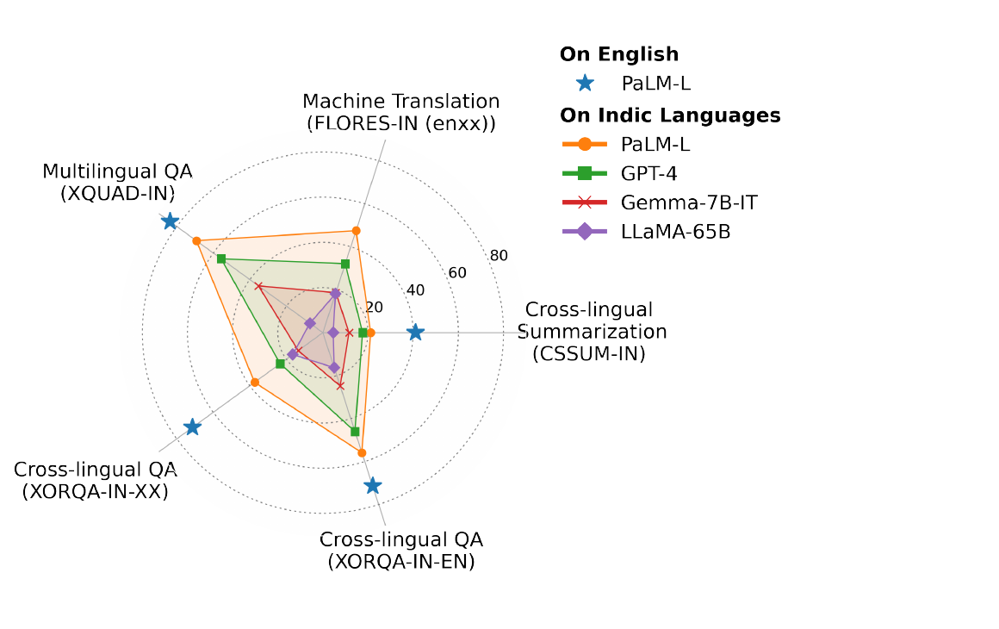
Singh et al. (ACL 2024) built IndicGenBench to make this gap impossible to miss: on every one of five generation tasks, even the best model (PaLM-2-L, orange) scores far below its own English performance (blue stars).
Unlike IndicXTREME's classification/NLU focus, this benchmark targets the tasks users actually interact with — summarizing, translating, and answering questions in their own language.
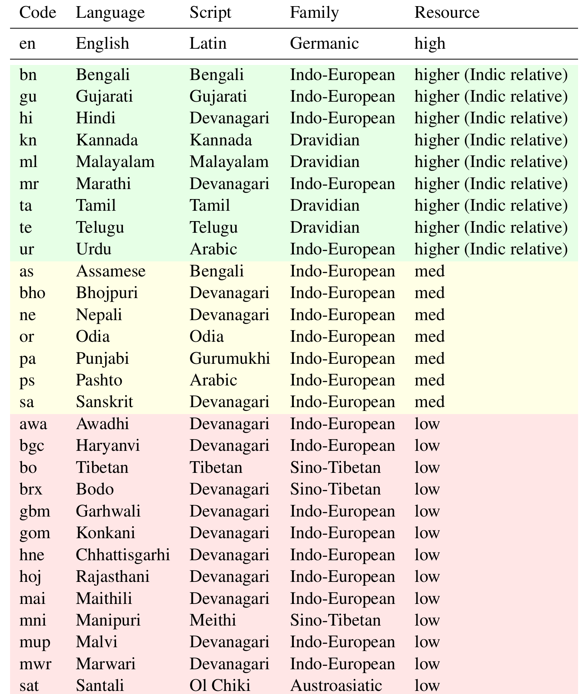
29 Indic languages, 13 scripts, 4 families — classified into Higher (9), Medium (7), and Low (13) resource tiers, based on web-text availability and Joshi et al.'s (2020) taxonomy.
Even the "higher" tier is modest by global standards: Hindi has ~160K Wikipedia articles versus 6.6M+ for English — the paper is explicit that "higher" here means higher relative to other Indic languages, not high-resource in any absolute sense.
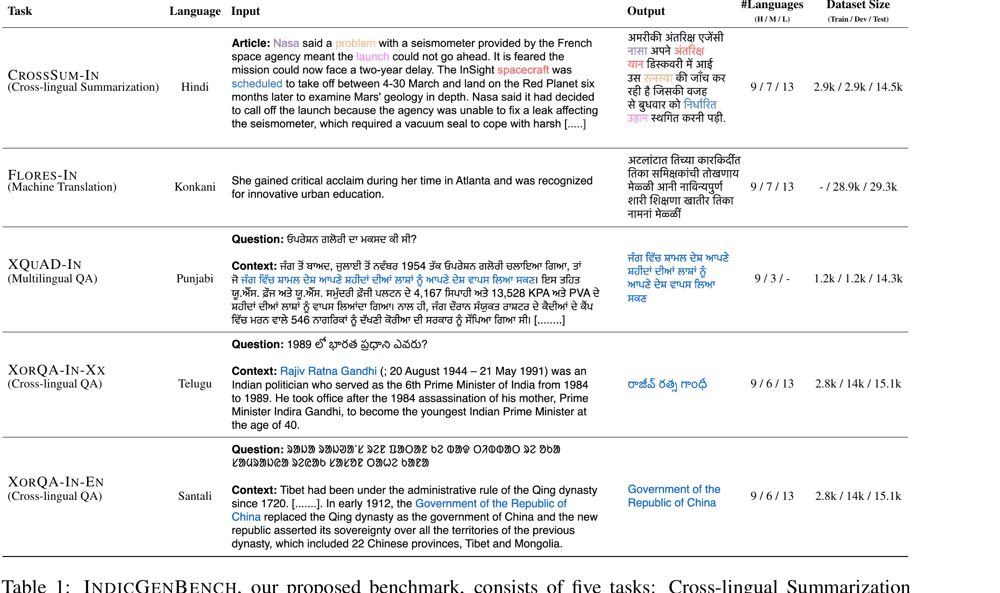
Cross-lingual summarization, machine translation, multilingual QA, and two flavors of cross-lingual QA — each with genuine dev/test data collected specifically for this benchmark, plus a small training set released for every task except FLORES-IN.
Every IndicGenBench dataset starts from an existing English-source benchmark — CrossSum, FLORES-200, XQuAD, XOR-TyDi — and adds professional human translations into Indic languages. The paper gives three explicit reasons:
Translating the same source examples into every language lets researchers separate task knowledge from language understanding, and directly measure cross-lingual generalization.
For many low-resource languages, there's no clean knowledge corpus (e.g. Wikipedia) to draw fresh source material from — translation sidesteps a data-acquisition problem that creating from scratch cannot.
By only translating into the target languages, the benchmark leverages all the design and quality-control work that already went into the source benchmarks.
Annotators were professional data labelers — contractors at the authors' organization and via a vendor — paid competitive rates compliant with applicable labor laws and prevailing market rates in each region.
Pay rates varied by language, from USD 2.80/hour for Pashto to USD 15.90/hour for Tibetan — reflecting local market rates rather than a single global rate, a detail worth noticing when comparing annotation practices across benchmarks.
Source: CrossSum (Bhattacharjee et al., 2023), itself derived from XL-Sum — BBC news articles in one language paired with summaries in another.
700 examples × 29 languages = 20,300 examples total — confirmed by direct computation from the paper's own per-language and language-count figures.
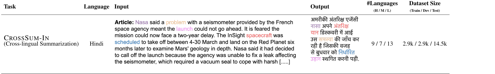
The color-coded spans show the alignment CrossSum was built on: "Nasa," "problem," "launch," "spacecraft," and "scheduled" in the English article each map to their counterpart in the Hindi summary — the model's job is to produce this kind of faithful, compressed summary directly in the target language, never via an intermediate English summary.
Source: FLORES-200 (NLLB-Team et al., 2022) — human-annotated, multi-way parallel MT data, already covering 22 of the 29 target languages.
FLORES-200 splits into dev (997), devtest (1012), and a non-public test (992) set. All 997 dev + 1012 devtest sentences are used, giving 2,009 sentences per language. For the remaining 7 new languages, the same sentences are freshly translated by humans.
2,009 × 29 languages = 58,261 ≈ 58.2k examples — matches the paper. FLORES-IN is the only task with no training split.
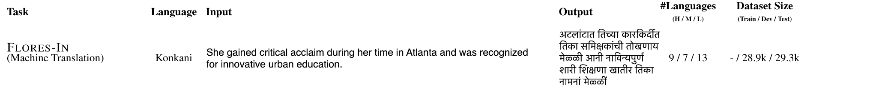
Plain sentence-level translation — no context, no question, just source sentence in, target sentence out. This same English sentence has a translation like this one in every one of the 29 languages, which is exactly what makes FLORES-IN n-way parallel: every language's output is directly comparable, because they all started from the identical source sentence.
Source: XQuAD (Artetxe et al., 2020), itself derived from SQuAD — an English Wikipedia passage paired with multiple question-answer pairs, where answers are short spans.
280 × 12 = 3,360 ≈ 3.3k passages; 1,390 × 12 = 16,680 ≈ 16.6k QA pairs — matches the paper exactly.
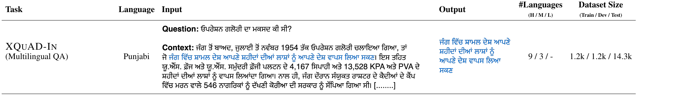
Question, context passage, and answer are all in Punjabi — the same language throughout. That's the defining feature of "multilingual" reading comprehension here: the model reads and answers entirely within one language at a time, just repeated across 12 languages. Contrast this with the next task.
Source: XOR-TyDi (Asai et al., 2021) — a non-English question paired with an English evidence passage and answer, designed for cross-lingual retrieval. It covers only two Indic languages: Bengali (302 examples) and Telugu (237).
Translators first convert the original Bengali/Telugu question into English.
That English question is then translated into all target languages, and separately, the English answer is translated into each target language too.
Routing every language through a common English pivot — rather than translating pairwise between 28 languages — is what makes this scale to a benchmark this size at all.
The Stage-2 translations (question and answer, both now available in every target language) are recombined into two distinct evaluation tasks:
| Task | Question | Passage | Answer | Tests |
|---|---|---|---|---|
| XorQA-IN-EN | target language | English | English | cross-lingual retrieval, matching the original XOR-TyDi setup |
| XorQA-IN-XX | target language | English | target language | generating the answer in the same language as the question |
Same underlying data, two different generation demands on the model — one English-answer task inherited from the source dataset, one same-language-answer task that's new.
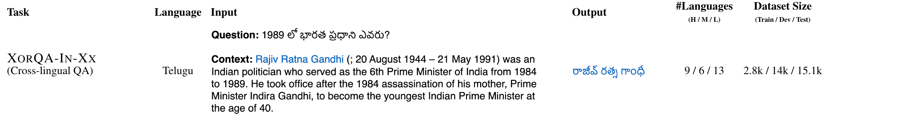
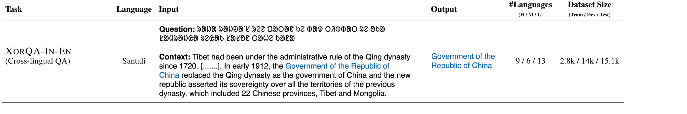
In both variants the question is asked in the target language but the evidence passage stays in English — the model must cross languages to find the answer at all. Only the output language differs: XorQA-IN-XX answers back in Telugu, XorQA-IN-EN answers in English.
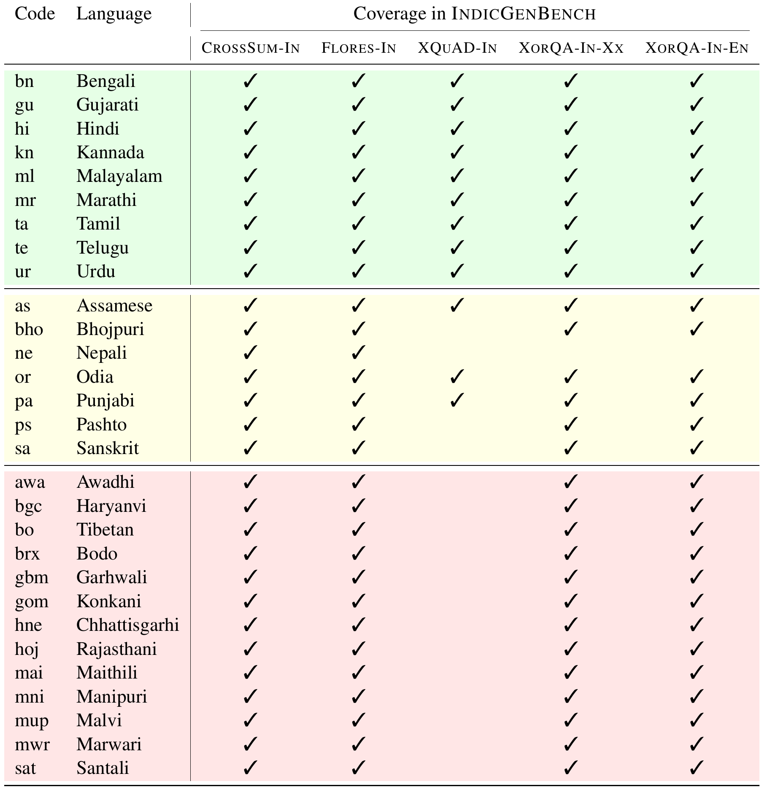
CrossSum-IN and FLORES-IN reach all 29 languages. XQuAD-IN — constrained by which languages already had XQuAD translations plus the 3 medium-resource languages selected for extension — covers only 11. XorQA-IN's two tasks reach 28 (Nepali was not translated).
Character-level F-score (Popović, 2015), used for CrossSum-IN and FLORES-IN. Token-level metrics like ROUGE and BLEU are unreliable for low-resource languages (Bapna et al., 2022) — tokenization itself is often the weak link, so scoring on characters instead sidesteps it.
SQuAD-style token-overlap F1, used for XQuAD-IN and both XorQA-IN tasks — kept consistent with the rest of the QA literature these benchmarks are drawn from.
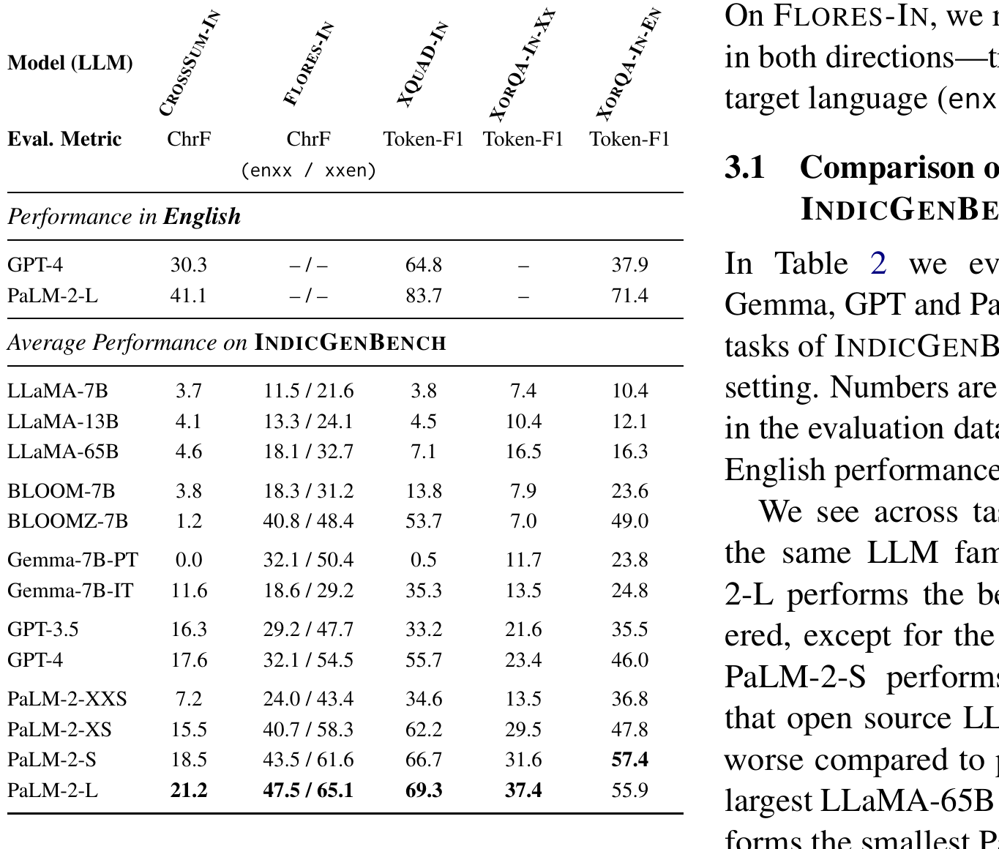
Larger models within a family consistently do better. PaLM-2-L wins on 4 of 5 tasks; open-source LLaMA lags badly (even LLaMA-65B underperforms the smallest PaLM-2-XXS); and BLOOMZ — instruction-tuned, broad multilingual pretraining — wins 3 of 5 tasks outright. Every model, even the best, trails its own English performance by 20+ points.
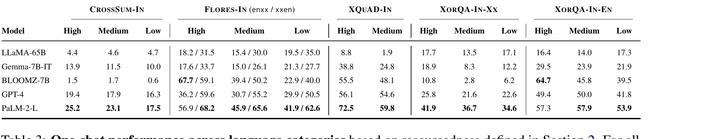
Performance drops from High to Medium to Low resource languages across every task. But look at FLORES-IN's two directions for PaLM-2-L: English→target drops sharply (56.9→41.9), while target→English barely moves (68.2→62.6). Current LLMs are far better at understanding low-resource languages than at generating them.
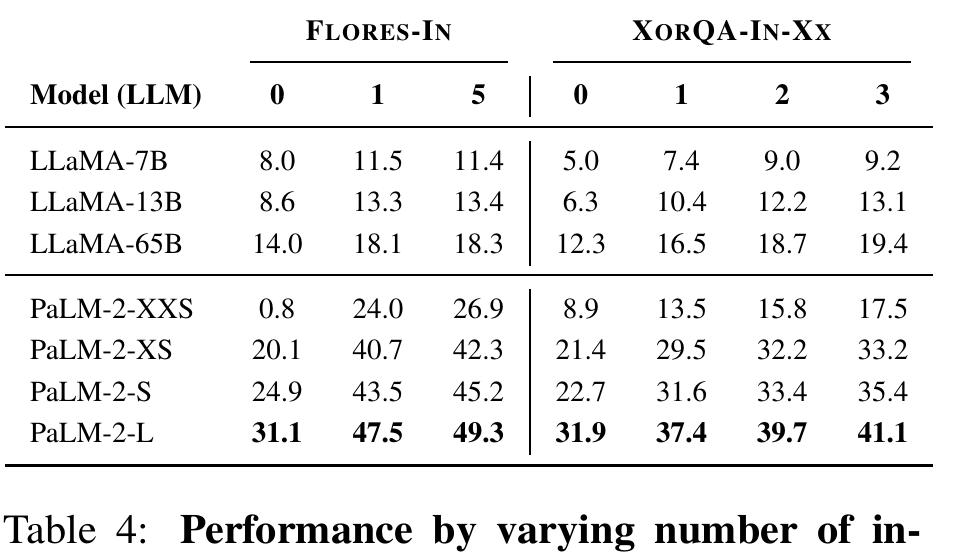
Every model family improves monotonically as more in-context examples are added — the biggest jump is almost always from 0 to 1 shot (e.g. PaLM-2-XXS on FLORES-IN: 0.8 → 24.0).
This sets up the next question: how many shots actually fit, once tokenizer fertility eats into the context budget?
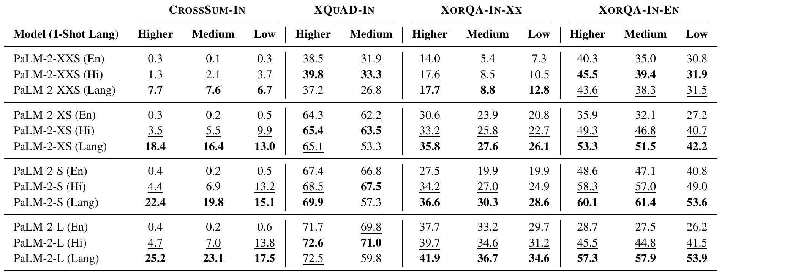
Prompting order is consistent everywhere: test language > Hindi > English — exactly the order of linguistic relatedness to the test language. For smaller models, Hindi exemplars come extremely close to (sometimes beat) exemplars in the test language itself.
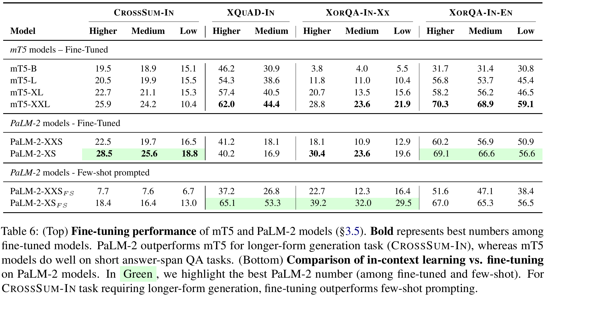
mT5 (older, but purpose-built for short-span generation) beats PaLM-2 on QA tasks even when fine-tuned; PaLM-2 wins on the longer-form CrossSum-IN. For QA, few-shot prompting on PaLM-2-XS already matches or beats fine-tuning it — for long-form generation, fine-tuning still wins outright, the one task where extra training data clearly pays off.
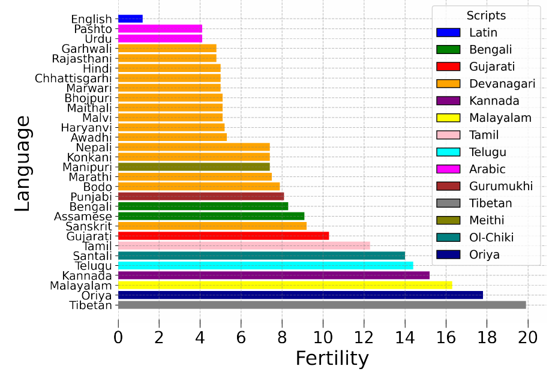
Fertility = average number of sub-word tokens a word gets split into. English sits near 1; Pashto is lowest among Indic languages at 4.1; Tibetan is highest at 19.9 — a word in Tibetan costs roughly 20× the tokens of the same word in English.
Higher fertility means the same text eats more of the model's fixed context window — purely a tokenizer artifact, not a reflection of anything about the language itself.
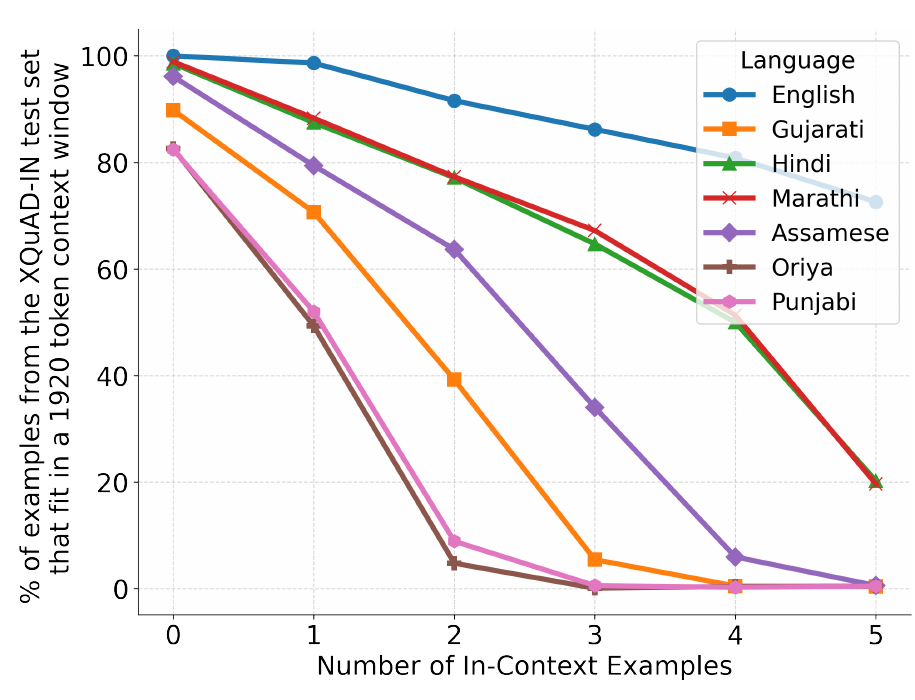
At a fixed 1920-token budget, English still fits 5 in-context examples for over 80% of its test set. Oriya and Punjabi — high-fertility languages — fall to near 0% by just 2–3 examples.
Combined with the previous slide, this directly explains the low-resource performance gap on the in-context-shots slide: it isn't only that models understand these languages less well — they also get to see fewer worked examples before answering.
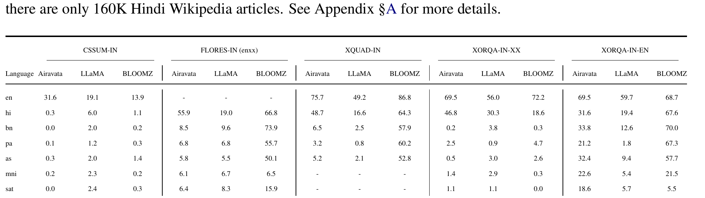
Airavata is fine-tuned almost exclusively on Hindi and English. It clearly beats LLaMA on Hindi — but its performance on every other Indic language (Bengali, Punjabi, Assamese, Manipuri, Santali) is much worse than BLOOMZ, a broad-coverage multilingual model. Specializing in one Indic language does not transfer to the rest.
The authors manually reviewed 20 PaLM-2-L predictions each, on CrossSum-IN and FLORES-IN, across five languages, with native speakers. In cross-lingual summarization, the model regularly invents details absent from the source article:
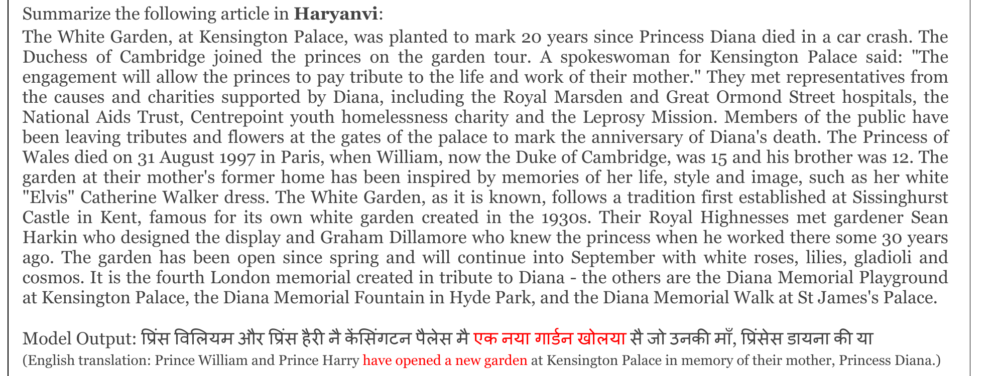
Awadhi, Haryanvi, and Chhattisgarhi are all related to Hindi and share its Devanagari script. Translating into them, the model frequently mixes in Hindi words and produces incorrectly inflected verb forms — errors highlighted in red below, against the human ground truth in blue:
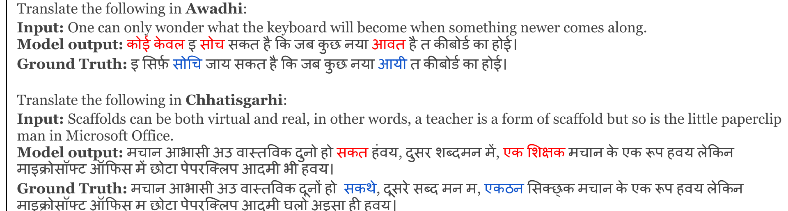
In machine translation, the model sometimes commits to the wrong sense of an ambiguous English word, or simply drops information present in the source sentence:
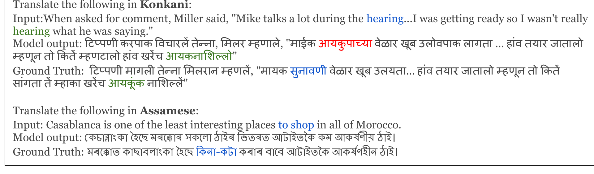
In the Konkani example, "hearing" means a court hearing the first time and "listening" the second — the model picks the "listening" sense for both. In the Assamese example, "to shop" is simply absent from the translation.
In compliance with the licenses of the original source datasets, IndicGenBench's evaluation data is released under three different licenses depending on lineage:
| Task | License | Inherited from |
|---|---|---|
| XQuAD-IN, FLORES-IN | CC BY-SA 4.0 | XQuAD, FLORES-200 |
| CrossSum-IN | CC BY-NC-SA 4.0 | CrossSum |
| XorQA-IN (both tasks) | MIT | XOR-TyDi |
Building on existing benchmarks means inheriting their licensing constraints too — one more consequence of the translation-based approach from earlier in this deck.